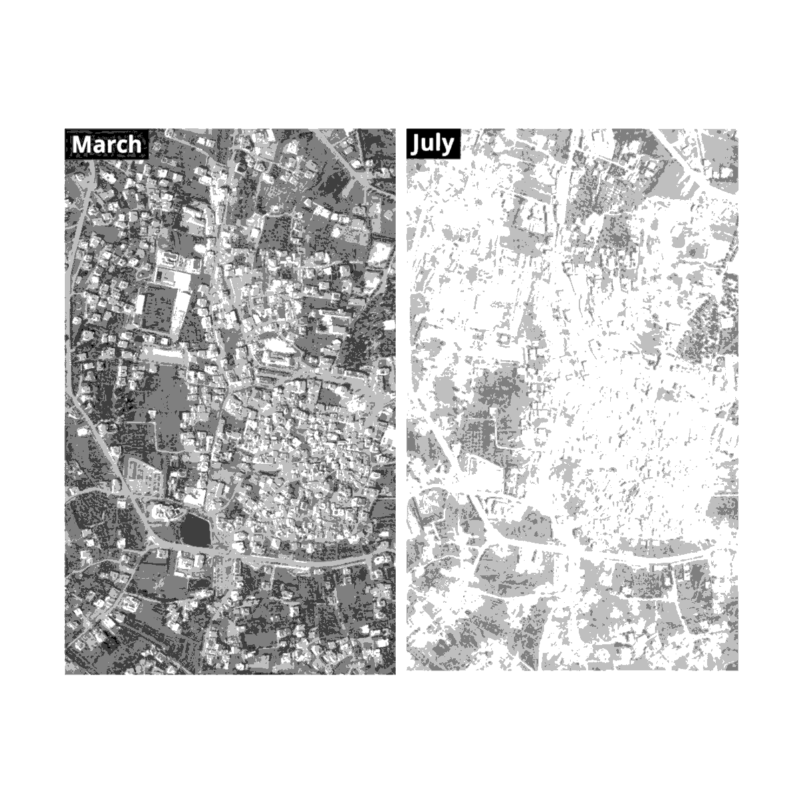
Source, date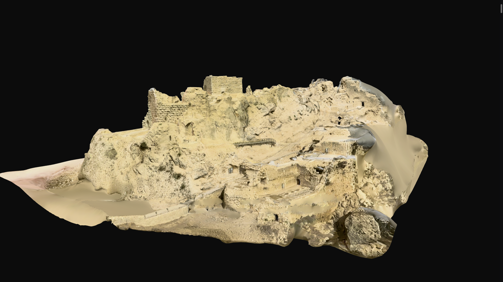
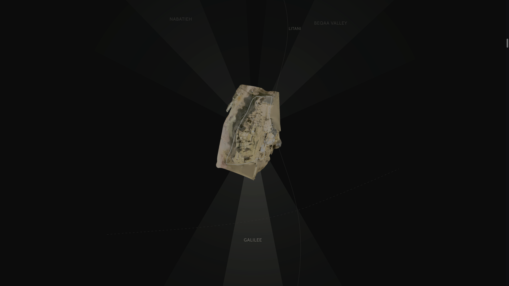
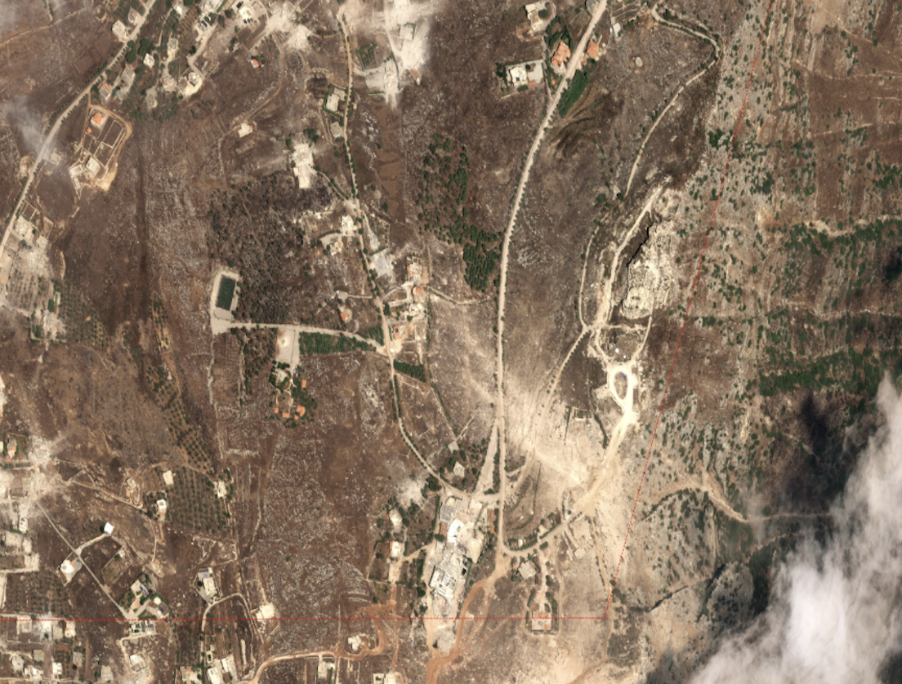
iof, May 2026
iof, May 2026
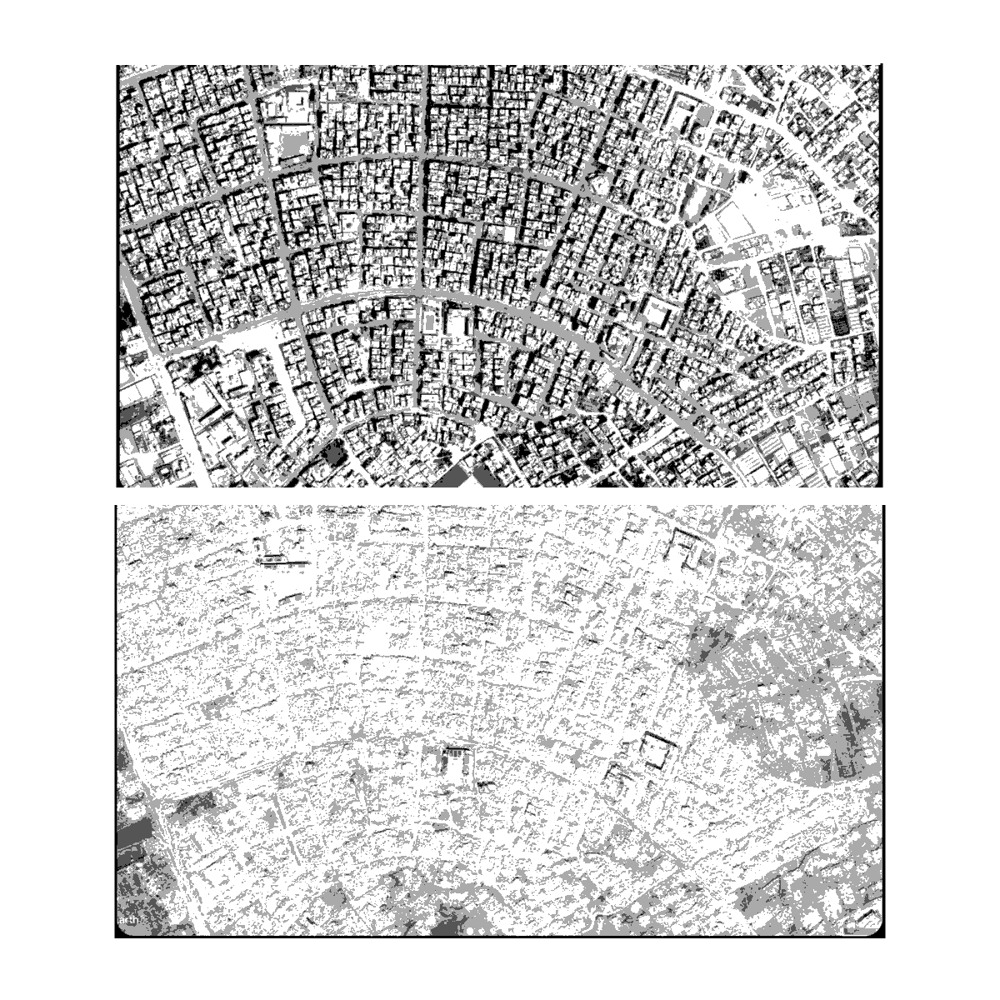
Source, date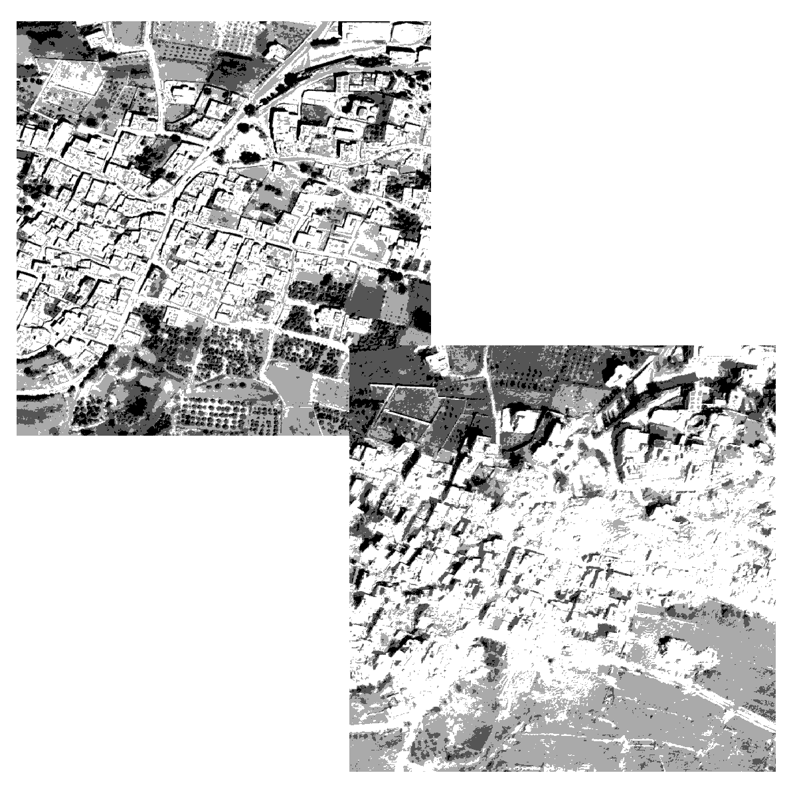
Source, date
Source, date
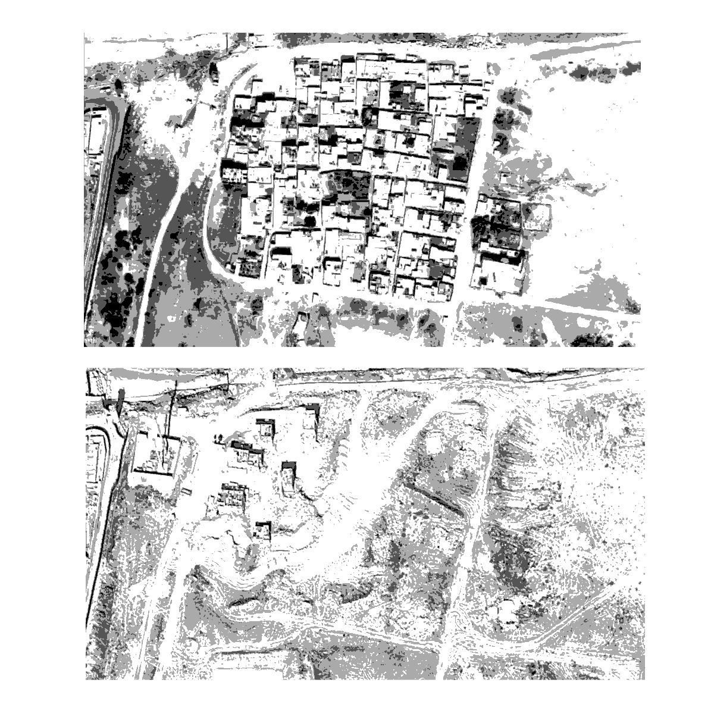
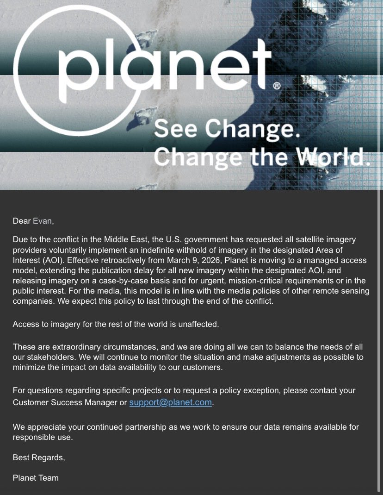
Planet Labs, email to users, April 2026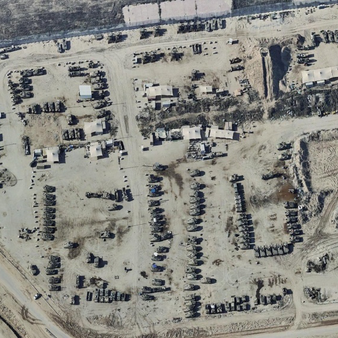
≈ 425 m An Israeli occupation base at the Karni crossing, northern GazaGovMap, 2025, via Middle East Eye. Quality is compressed.This is Qal’at al Shqif Arnoun, also known as Beaufort Castle in southern Lebanon's Nabatieh Governorate
The word Shqif, of Syriac origin, refers to the high towering rock, or steep cliff, that the castle was built into.
On July 31st 2026, Israeli forces carried out detonations in the area near the castle, using roughly 700 tonnes of explosives.
The 12th century fortress stands 700 meters above sea level;
it sits on a 300m cliff of karstic limestone, porous and riddled with crevices.
The castle overlooks the immediate southern Lebanese landscape, the surrounding villages in Nabatieh governorate,
as well as the Litani River, the Beqaa Valley,
and, to the south of it, the Galilee in occupied Palestine.
The castle has been sought after throughout history for its elevated position, its view from above.
"When you’re standing there, the view is incredible, and you know I’m no military expert, Podcast, episode, date
but I can see why it would be quite useful, Podcast, episode, date
the view of south Lebanon, the northern parts of Israel on one side, are just amazing and really quite impressive. Podcast, episode, date
Just behind you, 15 minutes drive away, is the major South Lebanese city of Nabatieh." Podcast, episode, date
In May 2026, the Israeli occupation forces announced that they had seized Qal’at al Shqif
releasing two videos as part of their announcement
The first was aerial footage of the ruins, seemingly captured by a commercial drone,
taken in the register of content designed to be packaged and shared
The second video begins at a similar angle,
but this one carries crosshairs at the center of the frame, indicating that it’s footage from an armed drone
For several seconds, the crosshairs track Israeli soldiers descending the castle’s stairs
The image is confusing
Briefly, I am watching the soldiers through their own apparatus
Having complete visual command of what you are trying to conquer
is an essential piece of the infrastructure of domination
Historically, it could have meant seizing the highest fortress
Now, it is one register of many that can go above it
The commercial drone, the fighter drone
or even higher: satellite imagery
over time, more optimized and automated
Perhaps the message here is that a watchful eye exists at all altitudes
Absolute vertical exposure as an offensive weapon
On the receiving end, encountering documents of this vertical exposure
has become routine for us, to process the wreckage and horror
One satellite before-and-after diptych on the feed, then another
We are simultaneously enraged and increasingly distant,
“watching life on earth as if seated in the atmosphere supervising”…
On April 4, 2026, the American commercial satellite company Planet Labs sent an email to its users.
Imagery of what it called the "designated area of interest" in the "Middle East conflict"
would be indefinitely withheld.
On their website, they state:
“Planet is driven by a mission to image all of Earth’s landmass every day,
and make global change visible, accessible and actionable.”
The firm now releases these images on a case-by-case basis.
This restriction has a precedent.
Between 1997 and 2020, the Kyl-Bingaman Amendment in US law
had prevented satellite companies from distributing high-resolution imagery of occupied Palestine.
Imagery was capped at 2-meter-per-pixel, the ground distance each pixel represented
This was sufficient to identify broad urban features, like roads and neighborhoods,
but generally not enough to reliably distinguish
for example, between a car and a tank
In contrast, Israel’s official public mapping service, GovMap, briefly, and some say mistakenly,
made high-resolution aerial images of Northern Gaza from 2025 publicly viewable.
At a resolution of roughly 13cm per pixel,
the images revealed extensive destruction, as well as occupation military outposts
Shortly after, the service re-blurred these images
You have to ask how and why these lapses in visibility occur
At this point, it might be obvious who decides how much detail is too much for us to see,
or when the aerial shutter needs to be completely closed
Satellite and aerial imagery reach us seemingly neutral,
but they carry the logic of their Cold War origins, which continues to sharpen
When we see too little, it serves a purpose, and when we see too much, it does as well
What must we do to escape this vague visual regime?
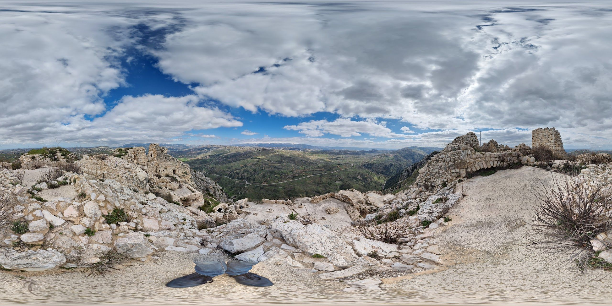
gs cred
Name, platform, date
Name, platform, date
Name, platform, date
Name, platform, date
Name, platform, date
Maybe we should look to the crevices,
to what is smaller than the highest resolution image we can get our hands on,
to what the image can not always resolve
Within the karstic cliffs of the South of Lebanon,
the same porous limestone the castle was carved into, riddled with fissures,
lives an animal called the Rock Hyrax, or Al Tabsoun Al Sakhri in Arabic,
which has its own appetite for a high lookout
It’s a small mammal that lives in colonies
and sleeps in crevices too narrow for anything overhead to image
Locals catch a glimpse of it when it comes out to bask in the sun, and sometimes lovingly greet it with a camera
One of the Hyrax colony always keeps watch from a high rock,
and at the first sign of danger it calls, and the others disappear into stone
Local grassroots organization, Green Southerners, have described the Hyrax as a symbol of the ecological cost of this war,
a silent witness
I wonder, has the Hyrax, from within the cavities of the terrain,
somehow seen more than an all-seeing visual regime?
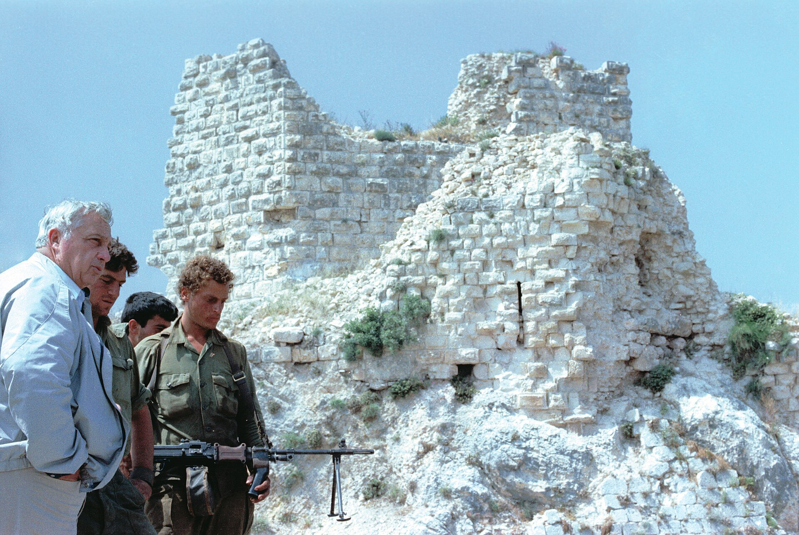
Source, datePerhaps it’s always been watching those who have no regard for it.
Colonies of one kind have lived in this cliff for generations.
Colonial powers of another kind have attempted to occupy the castle above it.
In June 1982, during the Israeli invasion of Lebanon, Ariel Sharon, then Israeli Minister of Defense,
descended by helicopter onto the castle with an army of photographers,
declaring a battle won without losses.
He was unaware that some of his soldiers had been killed,
and that none of the castle’s local guardians had surrendered.
One of them, wounded, was still in the rubble.
Perhaps, beside him in the rock, lay a Tabsoun or two, or a whole colony,
invisible yet seeing.
Source, date
The castle’s defenders had gone into the rock too.
In 1982, local fighters and students dug trenches and tunnels into the cliff,
and under shelling, they learned to count the seconds between a shell being fired and landing,
and to work inside that interval
Muin Taher, whose battalion held the castle in that battle,
states that while digging, they found the remains of dozens of men
who had died defending this ground against the Crusaders
They reburied them where they lay
Years later, during a restoration of the site,
the remains of two fighters from that 1982 battle were unearthed in the same ground
Fighters of previous battles become inseparable from the landscape,
as do the more-than-human elements among them
No image from above can resolve that
Source, date
Returning to the footage released by the Israeli occupation to announce their capture of the castle in May 2026,
I want to ask the same naive question:
Were they being watched from beneath by the remains of those who defended this land before,
or up there by a Tabsoun or two, or a whole colony?
After the drone scenes, the footage cuts to the ground, to a soldier’s own body camera.
Even with a watchful eye at every altitude, I believe the occupation forces are wondering the same thing.
Who can see us from angles we cannot even fathom or imagine?